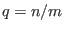
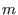
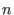
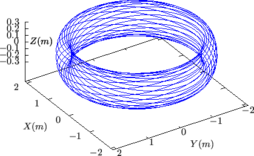
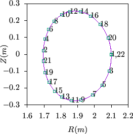

Next: Plasma current density Up: Safety factor Previous: Expression of safety factor
If the safety factor of a magnetic surface is a rational number, i.e., , where  and  are integers, then this magnetic surface is called a rational surface, otherwise an irrational surface. It is obvious that a field line on a rational surface with closes itself after traveling toroidal turns and poloidal turns. An example of a magnetic field line on a rational surface is shown in Fig. 5.
|  |
yj 2018-03-09